Compact Rodless Fishing System
Serious fishing capability without the bulk of a traditional rod and reel.
RRG Rocket Reel
The RRG Rocket Reel packs a surprising amount of capability into a 4.5-ounce handheld fishing system that floats. Its handle is the same handle used on the RRG Timber Tickler saw, giving two very different pieces of trail gear a shared, proven design.
Paired with the Rocket Launcher, the Rocket Reel can cast over 100 feet, while still offering familiar reel features like anti-reverse control, adjustable drag, and reel-style retrieval. Add unique RRG features such as Stealth Mode and Anti-Bird’s-Nest line management, and you get a compact fishing system built for the trail, campsite, kayak, bug-out bag, glovebox, or wherever adventure leads.
Pair it with accessories like the Reel Rack, Tackle Toter, and Yak Rack to build a setup around the way you fish and explore.
Everything you need for compact fishing.
Built to Be Repaired – Replacement parts are available so the Rocket Reel can be serviced instead of discarded.
RRG Warranty – Backed by the Ridge Runner Gear warranty.
Risk-Free Money-Back Guarantee – Try the Rocket Reel with confidence. If it isn't right for you, return it within the guarantee period.
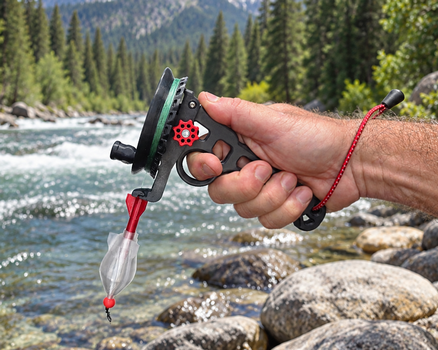
See It In Action
See the Rocket Reel’s features, setup, and real-world use in one quick overview.
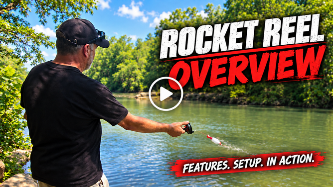
Serious fishing capability without the bulk of a traditional rod and reel.
One handle serves both the Rocket Reel and the Timber Tickler saw system, reducing bulk in your fishing or preparedness kit.
Provides solid line control during retrieval and helps deliver a more positive hook set.
Fine-tune resistance for your fishing setup and conditions.
Gives you direct line control during the cast.
Provides quieter operation with dynamic drag control directly through the reel.
Adds casting distance, stability, and depth control with lightweight bait or rigs.
Helps stop spool-overrun tangles before they become a mess, making the line quick to reset so you can get back to fishing.
Floats if dropped in the water, and the highly reflective hand leash makes it easier to locate at night with a flashlight.
Compatible with the Reel Rack for hands-free fishing.
At only 4.5 oz — and only 3 oz when paired with the Timber Tickler saw handle — the Rocket Reel is easy to carry in a backpack, kayak, camper, vehicle, on your belt, or even in a pocket.
Compact enough for bug-out bags, vehicle kits, and backcountry packs.
Works with the Rocket Launcher, Reel Rack, Tackle Toter, Yak Rack, and other compatible RRG gear.
Belt Clip Mode
The Rocket Reel is designed to stay out of the way when you're not fishing.
In Belt Mode, the integrated clip bracket keeps the reel securely attached to your belt, waistband, pack or MOLLE strap, or other convenient location while you move down the trail, around camp, or between fishing spots.
For transport, the hook and bait can be secured directly to the reel, helping keep the rig contained instead of dangling loose while you walk.
The clip bracket also doubles as a Rocket Reel hook, giving you a convenient place to hang the reel while unhooking, handling, or releasing your catch.
No separate rod to carry. No loose rig swinging around. And when you land a fish, you have a place to put the reel while your hands are busy.
Built for fishing wherever the trail takes you.
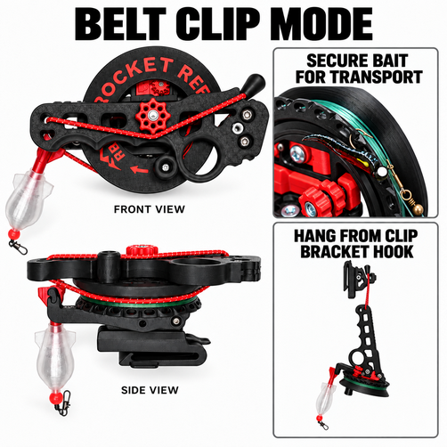
Why It Exists
I didn’t originally create the Rocket Reel to sell. It started as a solution to a problem I wanted to solve for myself—and eventually became the foundation of the RRG fishing system and why Ridge Runner Gear even exists.
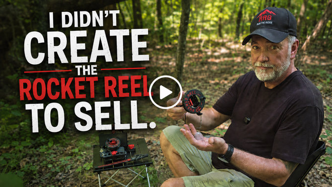
Quick Start
Rig it, cast it much like a traditional rod and reel, then retrieve your line just like you would with a conventional fishing reel. Its compact handheld design keeps the setup simple and trail-ready.
For added casting versatility, pair it with the Rocket Launcher, or use the Reel Rack when you want a hands-free setup.
While retrieving, lightly run the line behind your pinky finger to maintain direct contact with it. This makes it easier to feel subtle taps, movement, and changes in tension that can signal a bite, giving you direct feedback through the line without relying on a traditional rod tip.
The Rocket Reel shines anywhere carrying a full-size rod is inconvenient.
A compact fishing option when space and weight matter.
Easy to keep in your camp gear for spontaneous fishing.
Great for small water, tight spaces, and quick setups.
Provides fishing capability without carrying a full-size rod.
Packs easily into a car, camper, or travel bag.
A practical addition to bug-out bags and emergency gear.
Keep one on hand when you want a simple, ready-to-go alternative.
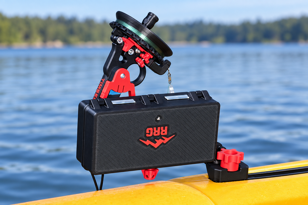
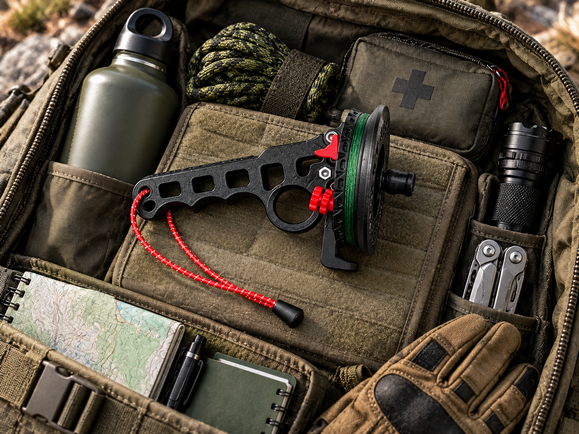
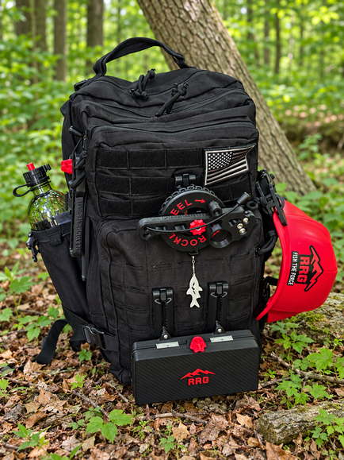
Standard Equipment
Everything below comes standard with every Rocket Reel.
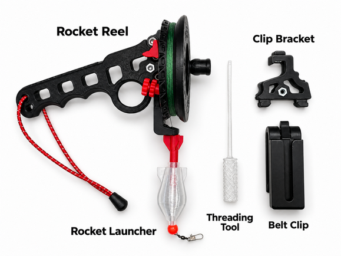
RRG Support
The Rocket Reel was designed to be serviced rather than treated as a disposable product. Replacement parts are available for individual components, helping keep your Rocket Reel in use if something becomes worn or damaged.
Ridge Runner Gear warrants the Rocket Reel against defects in materials and workmanship under normal use for 90 days from the date of purchase. If a covered defect occurs, RRG may repair or replace the defective part with proof of purchase.
View Full Warranty & Return Policy
If you're not satisfied with your Rocket Reel, you may return it within 30 days of purchase for a refund or exchange, subject to the RRG return policy.
View Full Warranty & Return Policy
Everything you need for compact fishing.
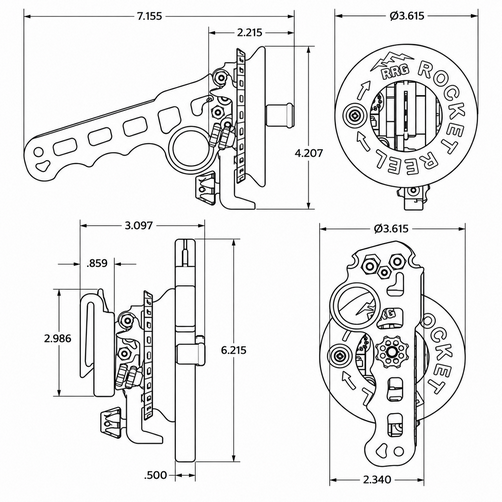
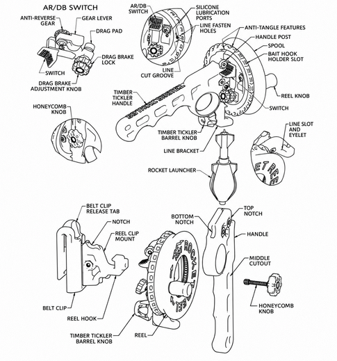
Designed to pair directly with the Rocket Reel for added casting versatility with lightweight rigs.
Allows the Rocket Reel to be used in a hands-free fishing setup.
The Rocket Reel handle also works with a compatible Timber Tickler saw, allowing one handle to serve both systems and reducing the gear you need to carry.
Pairs with the Rocket Reel as part of a compact, organized fishing setup.
Mounts the Rocket Reel and Tackle Toter to a kayak for a compact, organized on-water setup.
Compatible mounting options let the Rocket Reel integrate with other RRG gear for camp, kayak, and trail use.
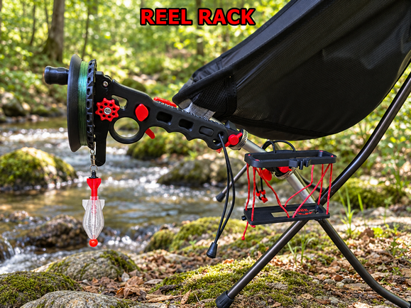
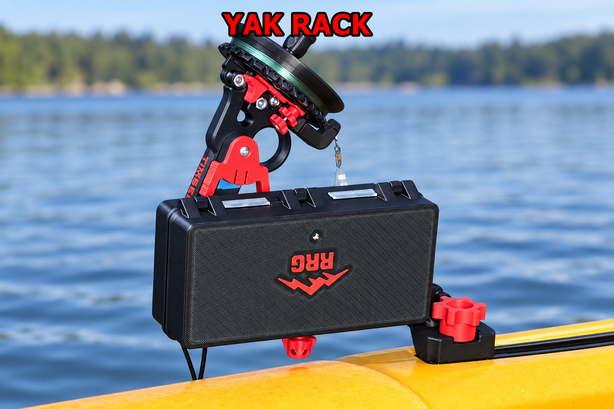
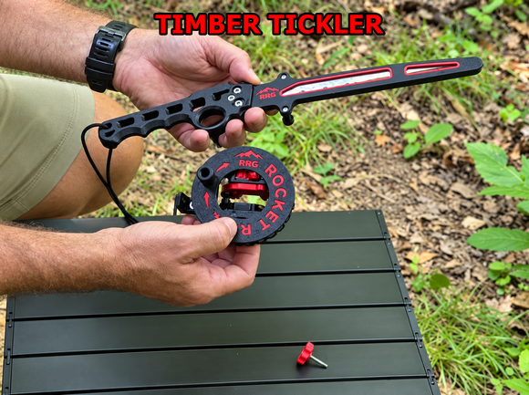
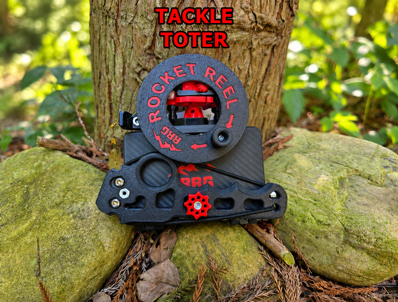
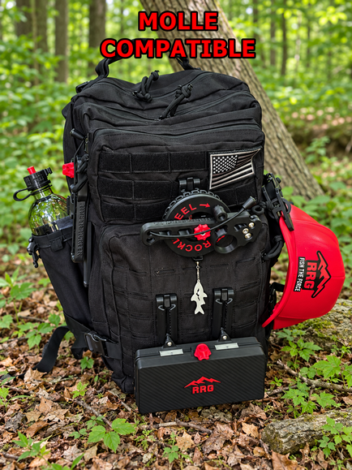
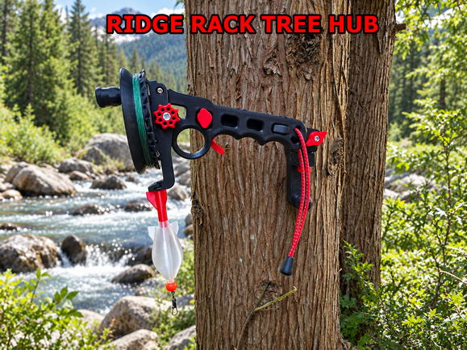
It combines the simplicity and compact size of handline fishing with reel-style retrieval, anti-reverse control, and other features normally associated with a traditional fishing reel.
Not in every situation. It is designed as a compact, lightweight fishing system for times when carrying a full-size setup isn't practical or necessary.
Casting is very similar to using a traditional rod and reel. The handheld design may feel different at first, but becomes more natural with a little practice.
Yes. One effective method is to run the line lightly behind your pinky finger while retrieving, which lets you feel changes in tension and subtle movement directly through the line.
The Rocket Reel is designed for fish up to 30 lb when used with an appropriate line and rig.
It holds up to approximately 100 ft of 20 lb monofilament or 130 ft of 20 lb braided line.
Yes. The Rocket Reel is designed to float if accidentally dropped in the water.
The Rocket Launcher is a water-fillable casting float that adds weight and stability for longer casts and allows lightweight baits and rigs to be used more effectively.
Yes. The Rocket Reel can be used with conventional rigs, lures, weights, and floats. The Rocket Launcher simply adds another level of casting versatility.
Stealth Mode provides quieter operation and allows dynamic drag control directly through the reel while fishing.
Notches on the reel and guides on the line bracket are designed to stop the reel from turning if the line jumps off the spool. The line can then be slipped out of the eyelet, unwound, and reset quickly so you can get back to fishing.
Yes. Pair it with the Reel Rack to create a hands-free fishing setup.
Yes. The Yak Rack allows the Rocket Reel and Tackle Toter to be mounted to a kayak for a compact, organized fishing setup.
Yes. The same handle is compatible with the Timber Tickler saw system, allowing one handle to serve multiple purposes and reduce the amount of gear you need to carry.
Its compact size, low weight, and modular design make it well suited for bug-out bags, vehicle kits, backcountry packs, and other preparedness setups.
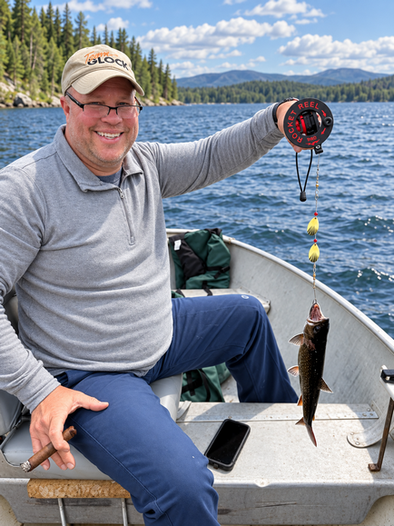
Pack the Rocket Reel in your backpack, kayak, vehicle, or emergency kit and have a compact, capable fishing system ready whenever the opportunity hits.
Everything you need for compact fishing.
Built to Be Repaired – Replacement parts are available so the Rocket Reel can be serviced instead of discarded.
RRG Warranty – Backed by the Ridge Runner Gear warranty.
Risk-Free Money-Back Guarantee – Try the Rocket Reel with confidence. If it isn't right for you, return it within the guarantee period.